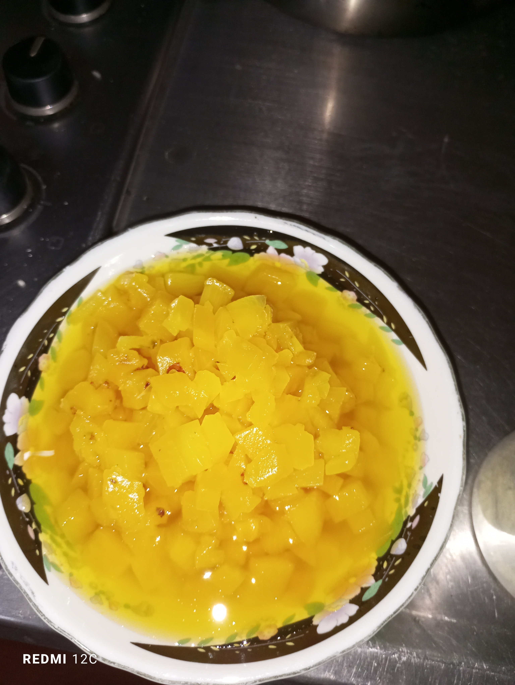
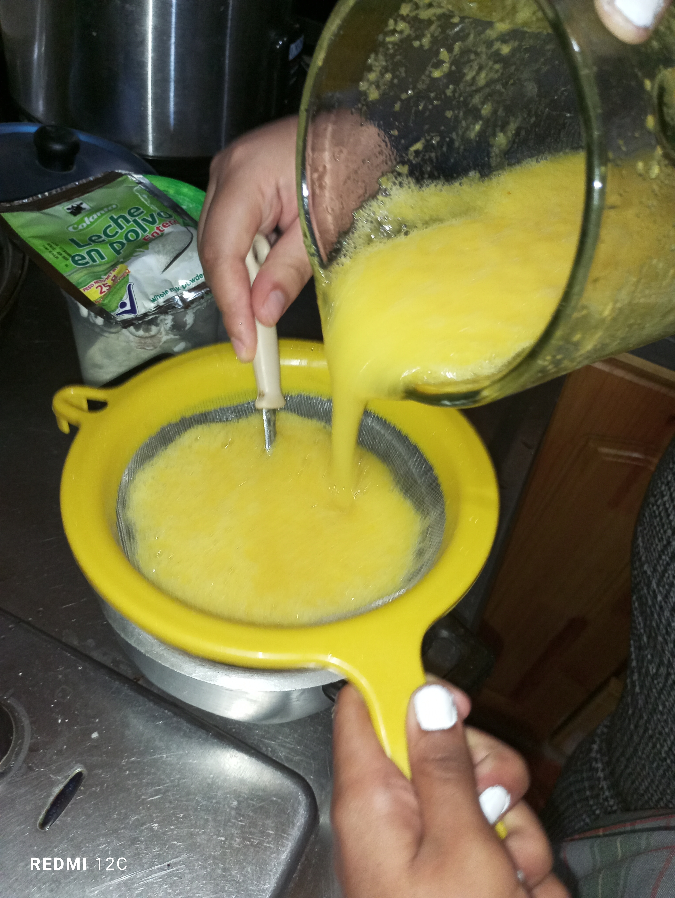
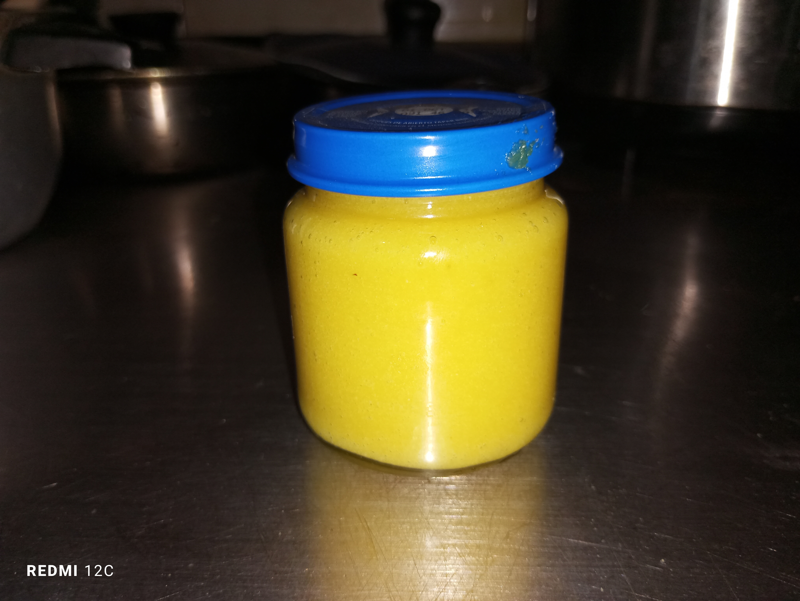

|

|
Pelamos y picamos la
piña en trozos ya que
esto es importante
para poderla
consumir ya que sin
pelar esto puede ser
un peligro potencial
contra la seguridad
alimentaria.
|
|
|
La vaciamos a la
licuadora con un
poquito de agua
para ya proseguir a
licuarla. La licuamos con un poquito de azúcar y agua
para triturar la piña al triturar la piña esta pierde
muchas propiedades naturales como su dulzura
es por esto que le agregamos azúcar. Esto
también nos favorece para que nuestra piña
quede un poquito espesa ya que se vuelve
cuajada.
|

|
Pasamos a colar la piña para drenar su
liquido. Esto es posible gracias a un
elemento filtrante de malla, colamos la piña
para que su liquido no quede con
endocarpio(consistencia leñosa).
|
.jpg)
|
Ya que obtenemos
el liquido de
nuestra piña
triturada este lo
pasamos a una olla
para luego
proseguir a
montarlo a una
estufa.
|
|
La montamos al fuego con un poco de
leche en polvo para que este coja sabor y
espesura. Al echar la leche en polvo esta le brinda una
concentración mas intensa a los azucares.
Esta nos contribuye al desarrollo muscular
debido a su alto contenido de proteínas.
|
|
|
Se revuelve para que
esta se integre con la
piña y no quede ningún
grumo. La leche nos
ayuda esto nos ayuda a
que la piña obtenga
espesura.
|
.jpg)
|
La empacamos en un frasco de vidrio ya que
este es impermeable a los gases, vapores y
liquidos.Lo que garantiza la conservación de las
vitaminas en los almacenamientos prolongados.
|
|
|
Esperamos a que se
enfrié la compota de
piña ya terminada y la
servimos en el frasco
para preservarla y que
nos dure mucho más
tiempo.
|

|
Obtenemos nuestro producto ya
terminado del cual ya podemos disfrutar.
|